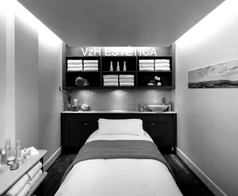

Nosotros
Estética VZH es un centro de belleza con sede principal en el barrio de Belgrano, en la Ciudad Autónoma de Buenos Aires, contando también con atención en Vicente López y Nordelta.
Somos especialistas en tratamientos personalizados enfocados en el cuidado de la salud y belleza personal. Nos enfocamos especialmente en la Excelencia en la piel y en el Arte al Cuidado de la Imagen
Fué fundado en el año 2003 por Andrea Paula van Zandweghe, actual Directora de la institución.
Estas son las cualidades que nos caracterízan y diferencian:
-
Atención Personalizada:
la privacidad y seguridad de cada paciente son los pilares en los que se basa nuestro trabajo.
-
Diagnóstico:
siempre se realiza un diagnóstico previo, el que determinará el tipo de tratamiento y aplicación específico para cada paciente.
-
Experiencia:
más de 20 años de experiencia en Dermatocosmiatría, Cosmiatría, Cosmetólogía, Kinesiología, Drenaje linfático, Estetica y Aparotología.
-
Formación Profesional:
contamos con formación profesional verificable en todas las áreas de aplicación y con capacitación constante.
-
Productos Premium:
Empleamos las últimas tendencias en el sistema de tratamientos faciales aprobados bajo regulaciones y normativas del mercado cosmético.